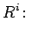
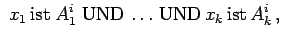
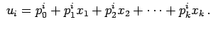
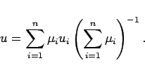

Inhalt Index DeskTop Bronstein

 Algebra und Diskrete Mathematik Fuzzy-Logik Wissensbasierte Fuzzy-Systeme
Algebra und Diskrete Mathematik Fuzzy-Logik Wissensbasierte Fuzzy-Systeme


Die Methode von SUGENO dient ebenfalls zum Entwurf eines fuzzy-geregelten Prozesses und unterscheidet sich vom MAMDANI-Konzept durch die Art der Regelbasis und durch die Methode, einen scharfen Ausgangswert zu bekommen. Sie beinhaltet die folgenden Schritte:
|  |  | ||
|  | (5.415) |
Es bedeuten:
|  | (5.416) |
Dabei bedeutet u einen scharfen Wert.
Eine Defuzzifizierung wie bei der MAMDANI-Methode entfällt hier. Die Bereitstellung der Werte der Gewichtsparameter pji stellt zwar ein Problem dar, aber die Parameter können durch ein maschinelles Lernverfahren, z.B. durch ein künstliches neuronales Netz, ermittelt werden.